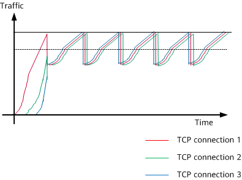
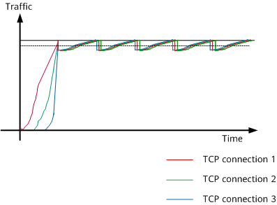

Tail drop and Weighted Random Early Detection (WRED) are common methods for congestion avoidance.
Tail drop is the conventional method for discarding packets. If packets enter a queue during network congestion, excess packets are discarded when the queue is full, and cannot be buffered. The tail drop method does not consider any QoS parameters and cannot provide differentiated services.
The tail drop method may cause global TCP synchronization, preventing TCP connections from being set up. In the following figure, the three colors represent three TCP connections. When packets from multiple TCP connections are discarded, these TCP connections enter the congestion avoidance and slow start state. Traffic volume decreases, before peaking once again. This is repeated over and over, resulting in unstable traffic that is constantly changing in volume.

Random Early Detection (RED) is used to avoid global TCP synchronization that occurs with tail drop. It does this by randomly discarding packets so that the transmission speed of multiple TCP connections is not reduced simultaneously. This results in more stable rates of TCP traffic and other network traffic.

However, RED does not accommodate QoS differentiation. Based on RED, WRED uses drop profiles to implement congestion avoidance. A drop profile defines the upper drop threshold, lower drop threshold, and drop probability. When a drop profile is applied to an interface or an interface queue, packets are discarded based on settings in the drop profile. When the length of a queue is smaller than the lower drop threshold, the device does not discard packets. When the length of a queue is between the lower drop threshold and the upper drop threshold, the device randomly discards new packets, with a larger drop probability for longer queues. When the length of a queue exceeds the upper drop threshold, the device discards all new packets in the queue.
Figure 3 shows the curve of the WRED drop probability.